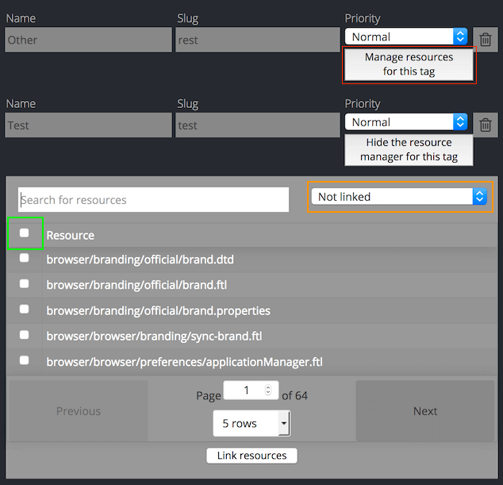

Adding a new project on Pontoon
Verify that the project is properly localizable
Project owners can follow the guidelines available in Pontoon Documentation to properly structure files inside the repository. Some things to check:
- Files should be organized in subfolders, one per locale, and the filename should remain the same across locales. More details on the supported formats and folder structure are available in Pontoon’s documentation.
- Pontoon needs write access to the repository (see this document).
It’s important to also check the files for localization issues before exposing them to localizers: unclear strings, lack of localization comments, missing plural forms are some of the things to check.
Create the project
Access Pontoon’s admin console and click ADD NEW PROJECT.
The new project will appear in the public list of Projects only after the next sync cycle.
- Name: name of the repository (it will be displayed in Pontoon’s project selector).
- Slug: used in URLs, will be generated automatically based on the repository’s name.
- Locales:
- Select at least one locale. To make things faster it’s possible to copy supported locales from an existing project.
- The Read-only column can be used to add languages in read-only mode. In this way, their translations will be available to other languages in the LOCALES tab when translating, but it won’t be possible to change or submit translations directly in Pontoon.
- You can uncheck the
Locales can opt-incheckbox to prevent localizers from requesting this specific project.
- Repositories: select the type of repository and URL. Make sure to use SSH to allow write access. For example, if the repository is
https://github.com/meandavejustice/min-vid, the URL should begit@github.com:meandavejustice/min-vid.git. You can use the Clone or download button in the repository page on GitHub, making sure that Clone with SSH is selected. - Leave the
Branchfield empty, unless developers asked to commit translations in a specific branch instead of the default one (usuallymainormaster). - Download prefix or path to TOML file: a URL prefix for downloading localized files. For GitHub repositories, select any localized file on GitHub, click
Rawand replace locale code and the following bits in the URL with{locale_code}. For example, if the link ishttps://raw.githubusercontent.com/bwinton/TabCenter-l10n/master/locales/en-US/addon.properties, the field should be set tohttps://raw.githubusercontent.com/bwinton/TabCenter-l10n/master/locales/{locale_code}. If you use a project configuration file, you need to provide the path to the raw TOML file on GitHub, e.g.https://raw.githubusercontent.com/mozilla/common-voice/main/l10n.toml. - Public Repository Website: displayed on dashboards. E.g.
https://github.com/meandavejustice/min-vid. Pontoon will try to prefill it after you enter Repository URL. - Project info: provide some information about the project to help localizers with context or testing instructions. HTML is supported, so you can add external links. For example:
Localization for the <a href="https://testpilot.firefox.com/experiments/min-vid">Min Vid add-on</a>.
- Internal admin notes: use them e.g. for developer contacts and information that other PMs will find useful when covering for you.
- Deadline: if available, enter project deadline in the YYYY-MM-DD format.
- Priority: select priority level from one of the 5 levels available (Lowest, Low, Normal, High, Highest).
- Contact: select the L10n driver in charge of the project, probably yourself.
- External Resources: provide links to external resources like l10n preview environment. You need to enter the name and the URL for each resource. You can also pick one of the predefined names: Development site, Production site, Development build, Production build, Screenshots, Language pack.
- Visibility: determines who can access the project. Pontoon supports the following visibility types:
- private (default) - only administrators can access the project.
- public - the project is visible for everyone.
- Pretranslation: see the document dedicated to pretranslation.
Click SAVE PROJECT at the bottom of the page, then click SYNC to run a test sync. In the Sync log you should be able to see if it succeeded or failed. If all went well, the new project will appear in the public list of Projects.
Important: once you verify the project works as expected, enable it for the general audience by setting Visibility to Public.
Tags
Tags can be used in a project to logically group resources, assigning them a priority. To enable tags for a project, check Tags enabled and save the project.
For each tag, it’s possible to define:
- Name: it will be displayed in project (e.g.
/projects/firefox/tags/) and localization dashboards (e.g./it/firefox/tags/), but also in search filters. - Slug: used in URLs for tag dashboards, e.g.
/projects/firefox/tags/devtools/. - Priority: like for a project, it’s possible to select a priority level from one of the 5 levels available (Lowest, Low, Normal, High, Highest).

Once you’ve created a new tag, you need to save the project in order to be able to manage the resources associated to the tag itself, using the button highlighted in red.
A few tips on using this section:
- Use the selector on the right (highlighted in orange) to switch between Linked resources, i.e. resources already associated to the tag, and Unlinked resources.
- The first checkbox on the left (highlighted in green) allows to select all displayed items. Note: if the search returns multiple pages, only those currently displayed are selected and will be linked if Link resources is clicked.
- There is no need to save the project when adding resources to a tag: linked resources are stored in the database as soon as they’re added with the Link resources button.
Resource deadline
Like for a project, it’s possible to set a deadline for a Resource.
Go to the resource section of the admin panel, then type the name of your project (e.g. engagement) and hit Enter. All the resources for your project should appear. Click on the one you want to edit, set the deadline in the Deadline field, then click SAVE.